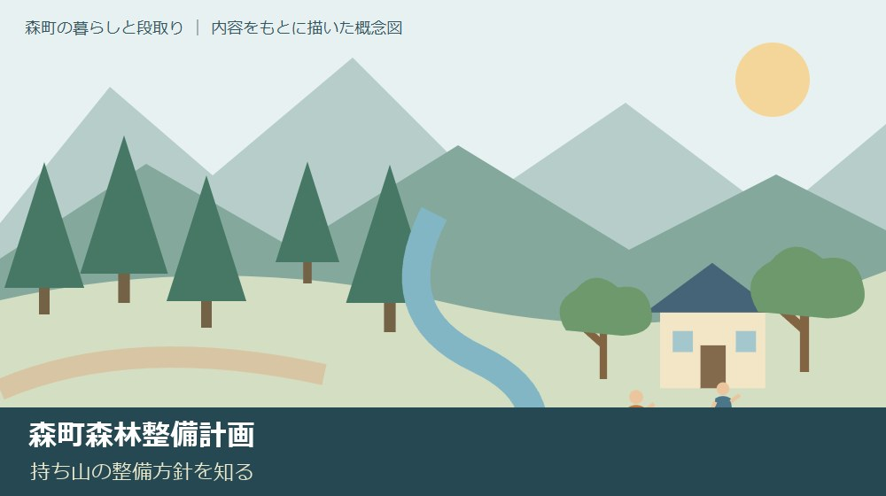
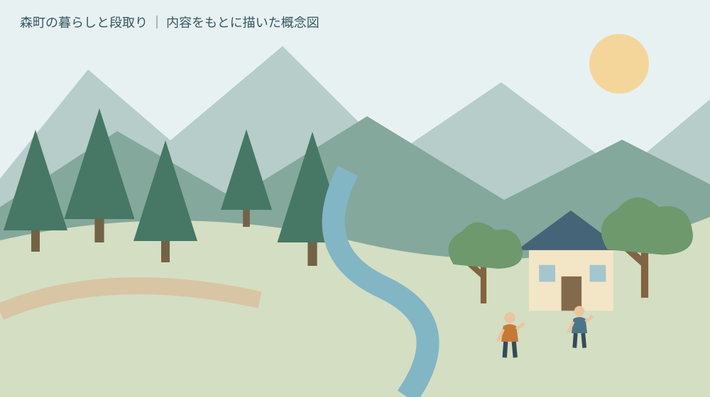
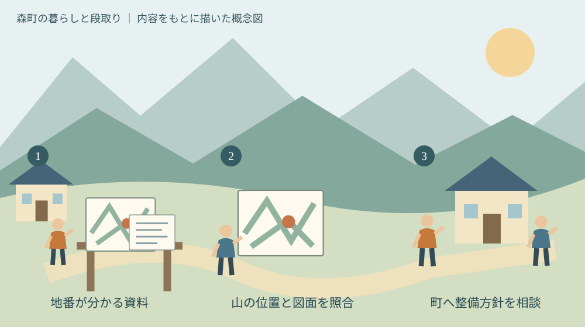

森町森林整備計画｜持ち山の整備方針を知る
／ 農地・山林・茶畑

Q. 持ち山の整備方針は、どこから調べればいい？
A. 森町森林整備計画は、持ち山の整備を相談するための指針です。北部の三倉・天方と南部の森・一宮・園田・飯田では、示される森林の姿に違いがあります。所在地が分かる資料を用意し、町の林政係へ相談します。個別の伐採可否や費用は計画だけでは決まらず、計画期限も公開資料間に不一致があるため要確認です。
持ち山の整備は、何を相談するかから始められる
森町の山を守ってきた方は、木を育てるだけでなく、道を見て、水の流れを気にかけ、隣の山の持ち主とも連絡を取ってきました。山を引き継いだ家族が同じことをすぐにできるとは限りません。遠方から通う費用や、資料を探す時間も負担の一部です。
大石浩之（磐田市／不動産業）です。森町森林整備計画を、持ち山をどう整備するか迷う家族の入口として読みます。行政の計画を全部覚えるための記事ではありません。所在地が分かる資料を一つ用意し、自分の山について何を聞けばよいかを整理する記事です。
本記事は2026年10月8日に森町の案内ページと添付計画書を確認しています。地域全体の方針と、個別の土地の伐採可否や費用は分けます。今日の段階で売却や伐採を決める必要はありません。ただ、どの山の話かを相談相手へ示せる資料は、選択を保留していても用意できます。
所在地や林班などを探す入口は、静岡県森林クラウドで森町の山林を調べる記事にもあります。画面上の情報だけで所有権や境界が確定するわけではありません。計画を読む前に、自分が見ている場所がどこかを整理する補助として使います。
2026年の変更｜変更日と効力発生日、期限の不一致
森町「森町森林整備計画について（変更）」は、2026年3月31日付の変更を公表しています。案内ページの更新日は翌4月1日です。添付計画書の表紙にも3月31日の変更日があり、「はじめに」には2026年4月1日から効力を生じると記されています。
変更日、ページ更新日、効力が生じる日は役割の異なる日付です。私は、相談メモに「2026年版」とだけ書かず、資料名と確認日も残すことを勧めます。後から差し替えられた資料と比べるとき、どの時点の内容を読んだかが分かるようになるからです。
計画期限には不一致があります。町の案内本文は2029年3月31日までとしていますが、添付計画書の表紙は2034年3月31日までとしています。今回の確認では、この食い違いを解消できていません。どちらかを誤植と決めつけず、期限は町の林政係へ確認する事項として残します。
期限が一致しないことを理由に、資料の全項目が使えないとも判断しません。私は、日付が一致している変更の情報と、本文で確認できる地区別方針を分けて読みます。不明な点を囲っておけば、分かっている内容まで曖昧にせず、町へ具体的な質問ができます。
計画は、森林所有者などが行う森林整備の指針です。添付計画書は、県が定める天竜地域森林計画の対象森林を本計画の対象としています。森町の住所がある土地すべてに、同じ整備条件が自動的にかかると読まないでください。対象かどうかは所在地を示して確認します。
北部の三倉・天方｜水源と、木を運び出す段取り
森町森林整備計画の本文2ページは、北部の三倉・天方地区について、水源涵養機能を高める森林整備を示しています。水源涵養は、森林が水を蓄え、流れを調節する働きとして考えると読みやすくなります。木材の利用だけを目的にした説明ではありません。
北部では、路網を整備し、森林施業を集約化する方針も示されています。形質の良好な木材を搬出できる森林を目指す内容です。木を育てることに加え、どの道を使い、どの範囲をまとめて整備するかが計画上の論点になっています。
森林施業の集約化の説明では、複数の所有者の森林を取りまとめ、効率的に施業する森林経営計画の作成を促すとされています。ここでいう町の森林整備計画と、所有者等が作る森林経営計画は同じものではありません。町の指針と、具体的にまとめる計画を区別します。
私は、集約化を「隣と一緒なら何でも安くなる」と受け取らない方がよいと考えます。所有者の意向、作業範囲、道の条件がそろわなければ、相談は進みません。今日できるのは、隣接する山の持ち主について分かる資料があるかを確認し、知らない部分を質問に残すことです。
路網整備が計画に書かれているからといって、自分の山まで道が完成しているとは限りません。私は、既存の道、通行できる道、今後整備を検討する道を分けて相談したいと思います。地図上で線がつながって見えることを、車両が通れる証拠にはできません。

南部の森・一宮・園田・飯田｜身近な森林と里山の維持
森町森林整備計画は、南部の森・一宮・園田・飯田地区でも水源涵養機能を高める整備を示しています。その上で、「町民の森」を中心とした、森林に親しめる空間や健康づくりの里山を目指し、維持管理と段階的な整備を進める考え方を記しています。
北部は生産、南部は遊び、と単純に二分することはできません。両方に水源の働きが記されています。私は、この共通点を読んでから地区ごとの違いを見る方が、持ち山の相談を狭めずに済むと思います。地名だけを見て、木材利用や保全の可能性を決めないためです。
身近な森林空間という表現も、個人の山を誰でも自由に使えるという意味ではありません。私は、計画の目指す姿と、現地の立入りや利用の承諾を区別します。近くに住宅がある山なら、整備の目的に加え、周囲との連絡や作業時の配慮を相談材料にできます。
森林の機能は、木材等生産、水源涵養、山地災害防止・土壌保全、快適環境形成、保健・レクリエーション、文化、生物多様性保全の7つに整理されています。木材の価格だけでは山の役割を言い尽くせないことが、計画そのものにも表れています。
私は、この7区分を家族に暗記してもらう必要はないと考えます。自分の山で気になることが、道なのか、水なのか、木の手入れなのかを一つ選べれば、相談の入口になります。役割が複数あるからこそ、整備の目的も一度に全部決めず、優先して聞きたいことを置きます。
良い点｜一人の持ち主だけでは見えない関係を示す
森町森林整備計画は、地区の特徴と森林の機能を合わせて整備の方向を示しています。私は、持ち主が自分の山の中だけで悩まなくてよくなる点を評価します。水源や道、隣接する森林との関係を、相談の話題にできるためです。
複数の所有者の森林を取りまとめる考え方にも利点があります。私は、小さな土地ごとに全員が同じ資料を探す負担を考えます。共同で相談できる可能性があれば、整備の時期や必要な確認を合わせる余地が生まれます。ただし、参加する人の合意を省けるわけではありません。
町の案内ページには、計画書だけでなく、現況や経営、路網、制限などの概略図も掲載されています。私は、文字だけでは分かりにくい問いを地図で尋ねられる点を評価します。自分の山がどの資料に対応するかを聞くことで、読むべき資料を絞れます。
北部と南部に異なる記述があることも、私は実務上役立つと思います。山の売却価格のような単一の数字へ話を急がず、まず周辺で何を目指しているかを確認できます。手元の資料に地区名を書き足すだけでも、家族と相談先が同じ場所の話をしやすくなります。
注文したい点｜期限の整合と、個別の山への案内が欲しい
森町森林整備計画の案内ページとPDFで期限が一致しない点は、利用する側が迷う部分です。私は、正しい期間の確認と表示の整合を望みます。古い資料なのか、新しい変更を読めているのかを持ち主自身が推測しなければならない状態は、相談前の負担になります。
計画の方針から、自分の山の費用を直接計算することはできません。私は、持ち主が最初に尋ねる際に必要な資料を、さらに絞って案内してもらえると助かると思います。地番、位置図、所有関係など、どこまで用意すれば個別の相談へ進めるかが分かるからです。
森林の整備にどのくらい人手がかかり、誰へ依頼できるかも、計画の読み方とは別に残ります。私は、方針があることを、担い手がすぐ来てくれることへ置き換えたくありません。今日の一歩として、相談したい作業を「道の確認」「間伐の相談」など一つの名詞にしてメモします。
概略図を読める家族と、紙の資料しか使わない家族の違いもあります。私は、画面を見る人だけが判断する形を避けたいと考えます。資料名と問い合わせ先を紙に一行残すだけでも、次に相談する人の負担は変わります。図面の意味が不明なら、分からない箇所を示して質問します。
対案・結論｜地番が分かる資料一つと、聞きたいこと一つ
森町の持ち山について整備を相談するなら、所在地が分かる資料を一つ探すことから始められます。私なら、登記関係の資料、以前の森林の図面、家族が保管する位置図を確認します。何が手元にあるかを把握する段階で、新しい図面をすべて取得する必要はありません。
資料の上には、分かる地区名と地番を書き、林班などの情報があれば併記します。地番と林班は同じ番号とは限らないため、資料の欄名をそのまま残します。私は、数字だけを転記せず、何の番号か分かるようにする方が、窓口で照合しやすいと考えます。
町の林政係の電話は0538-85-6317です。所在地を示し、計画の対象か、どの図面を見ればよいか、整備について誰へ相談すればよいかを聞けます。計画期限の不一致も、この段階で確認する質問に加えます。回答を受けてから、必要な追加資料を用意します。
現地確認を頼む場合は、場所だけでなく、何を見てもらいたいかも伝えます。倒木が心配なのか、木を育てる手入れを考えるのか、道が分からないのか。私は、目的を一つに絞ると、必要な専門家や資料について相談しやすくなると考えます。危険な場所へ自分だけで入らないことも前提です。
伐採を具体的に考える段階では、森町の伐採届を確認する記事を別に参照してください。地域の整備方針を読んだことは、個別の伐採手続きが終わったことを意味しません。費用、権利、必要な届出は、それぞれの条件を確かめます。

家族に残す記録｜所有の届出と、整備の相談は別に管理する
森町「森林の土地の所有者届出制度について」は、対象の森林を相続や売買等で新たに取得した場合の届出を案内しています。対象は地域森林計画の対象となっている民有林です。所有者になった日から90日以内という提出期限が示され、相続の場合は前所有者の死亡した日とされています。
公式案内には、国土利用計画法に基づく所定の届出を行った場合の除外も記されています。2026年4月1日以降の届出から様式が変わる案内もあります。自分に必要な手続きや期限の扱いが分からない場合は、町へ相談してください。個別の相続や登記の判断は専門家にも確認します。
私は、森林整備計画を読んだ記録、所有者届出の控え、整備を相談した記録を分けて保管したいと思います。計画を調べたから所有の手続きも済んだ、と家族が思い込まないためです。手続きが未確認なら、その欄には未確認と明記します。
境界の資料を探す際には、地籍調査の成果と境界の確認方法も役立ちます。森林の概略図を、隣地との境界を確定する資料と同一視しないでください。どの資料が何を示すかを分けることが、家族へ引き継ぐときの混乱を減らします。
残す記録は、立派な冊子でなくて構いません。私は、資料の保存先、相談した日、相手、回答、次の確認事項を一枚へ置く形を勧めます。山を売るか残すか未定でも作れます。実家カルテなどを使う場合も、推測と確定した情報の欄を分けてください。
大石の視点｜まだ決めないためにも、場所だけは確かめる
森町の山林を引き継いだ家族に、私はすぐ売るか整備するかを決めるよう迫りたくありません。私は不動産業の立場から、まず所在地と資料の意味を確かめる順番で考えます。これは特定の山の相談を受けた体験談ではなく、今回の計画を読んだ私の意見です。結論を保留する時間にも、次の判断に使える材料を一つ増やすことはできます。
私にも迷いがあります。持ち主が資料を集める負担をどこまで引き受け、どの段階から専門家へ頼むのがよいのかは、家族の距離や資料の残り方で変わります。全部そろわないと相談できないとは考えません。何が分からないかを書いた紙も、相談の出発点になります。
計画の地区区分だけでは、持ち山の答えは出ません。今日、所在地が分かる資料を一つ探し、林政係へ聞きたいことを一つ書く。森林整備計画は、その問いを作るために使えます。山を守ってきた人の仕事を引き継ぐ第一歩を、決断の早さだけで測らないでください。
よくある質問
この記事の条件と未確認事項を、質問ごとに整理します。手続きの前には出典の最新案内も確認してください。
計画だけで伐採できますか
森林整備計画を読んだだけでは、個別の伐採が可能と確定しません。町全体の整備の指針と、対象地の制限や必要な手続きは別に確認します。所在地や地番が分かる資料と、何のためにどの範囲を伐採したいかを用意して林政係へ相談してください。計画への位置づけは、土地の所有権や隣地への立入り承諾の代わりにもなりません。
どの地区か分かれば整備方法が決まりますか
地区の方針だけで整備方法は決まりません。三倉・天方では水源涵養や路網、施業の集約化、南部では水源涵養と身近な森林空間などが示されています。個別の山は位置、道、樹木の状態、所有関係などの確認が必要です。地区名は相談の入口に使い、具体的な費用や作業範囲は現地条件と担当窓口・専門家の確認を踏まえて検討します。
計画期限は2029年ですか2034年ですか
今回確認した案内本文は2029年3月31日、添付計画書表紙は2034年3月31日で一致していません。本記事ではどちらかを正しい期限と確定していません。町の林政係0538-85-6317へ、資料名を伝えて確認してください。2026年3月31日付の変更と、4月1日から効力を生じる旨は添付計画書で確認しています。
出典・確認日
- 森町：森町森林整備計画について（変更）（2026年10月確認／確認日：2026-10-08）
- 森町森林整備計画書（2026年3月31日変更）（2026年10月確認／確認日：2026-10-08）
- 森町：森林の土地の所有者届出制度について（2026年10月確認／確認日：2026-10-08）
最終確認日：2026-10-08。制度・数値・受付条件は変わる場合があります。最新情報は発信主体へ確認してください。権利・登記・相続・農業技術や安全管理など、個別の判断は担当窓口や適切な専門家へご相談ください。